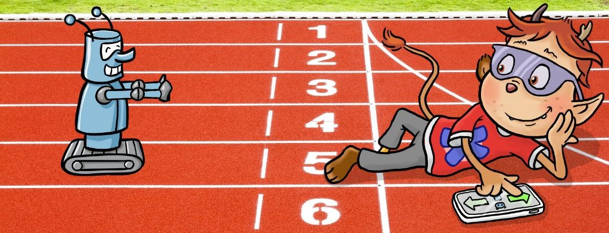

Was sind die Olympischen Spiele?
Hiermit erklärt KABU die Spiele für eröffnet! Am 26.Juli 2024 beginnen die Olympische Spiele in Paris. Dort werden sich Sportlerinnen und Sportler aus der ganzen Welt in verschiedenen Sportarten messen. Dabei wollen sie ihre besten Leistungen erbringen, um so Medaillen für ihr Land zu gewinnen. Insgesamt treten dieses Jahr über 10.000 Athletinnen und Athleten in 40 Sportarten gegeneinander an.
Die Entstehung der Spiele
Die Spiele werden schon seit der Antike ausgetragen. Sie wurden im antiken Griechenland ins Leben gerufen, um die damaligen olympischen Göttinnen und Götter zu ehren. Die Spiele fanden auf der Halbinsel Peloponnes statt, die Teilnehmenden kamen größtenteils aus Europa.

Die olympischen Ringe
Das Symbol für Olympia zeigt fünf Ringe. Jeder dieser Ringe symbolisiert einen Erdteil: Europa, Asien, Afrika, Australien und Amerika. Durch die Ringe, die ineinander verschlungen sind, wird das Zusammenkommen der Länder und deren Sportler symbolisiert.
Wann und wo finden die Spiele statt?
Die Olympischen Spiele finden alle vier Jahre statt, so dass verschiedene Länder die Möglichkeit haben, den Austragungsort zu stellen. Paris ist 2024 bereits zum dritten Mal der Austragungsort der Spiele, das Ereignis dauert zwei Wochen und endet am 11. August 2024.
Im Jahr 2028 werden die nächsten Olympischen Spiele vom 14. Juli bis zum 30. Juli in Los Angeles (USA) stattfinden.
Begriffe
Olympia… war der ursprüngliche Austragungsort der Olympischen Spiele in der Antike. Olympia gibt es auch heute noch, dieser Ort liegt auf der griechischen Halbinsel Peloponnes und gehört zum UNESCO-Weltkulturerbe
Olympische Spiele… sind das Sportereignis, das alle vier Jahre an unterschiedlichen Orten ausgetragen wird. Es gibt abwechselnd Winter- und Sommerspiele, die im Wechsel stattfinden. Die letzten Winterspiele fanden 2022 in Peking statt.
Olympiade… ist der vier Jahre lange Zeitraum zwischen den Olympischen Spielen.
Olympioniken… sind genau genommen nur diejenigen Teilnehmenden, die etwas gewonnen haben.